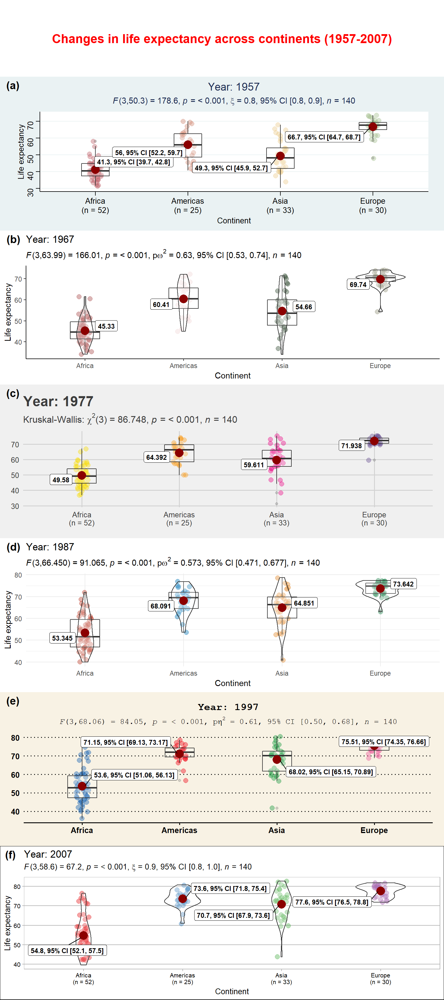
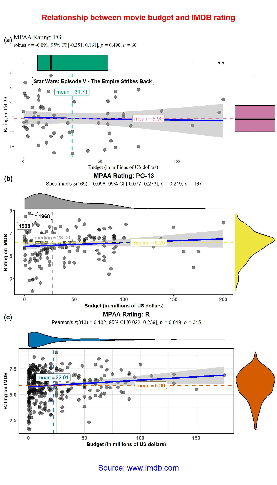
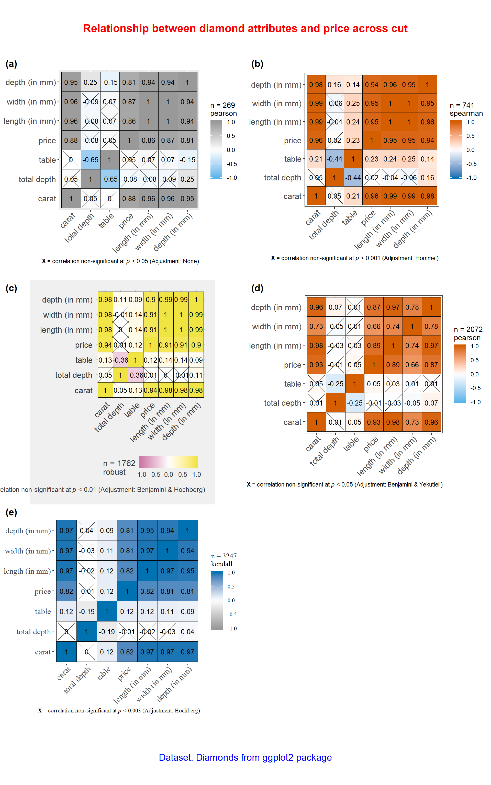
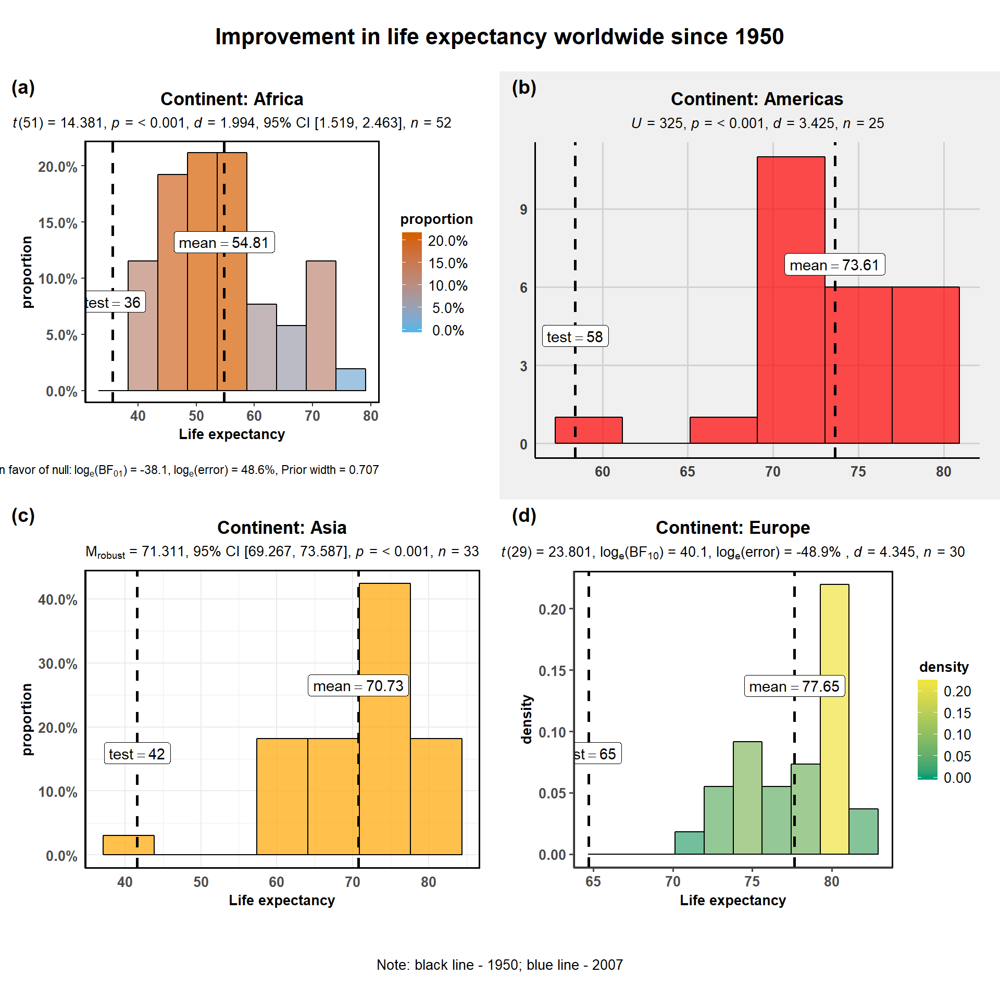
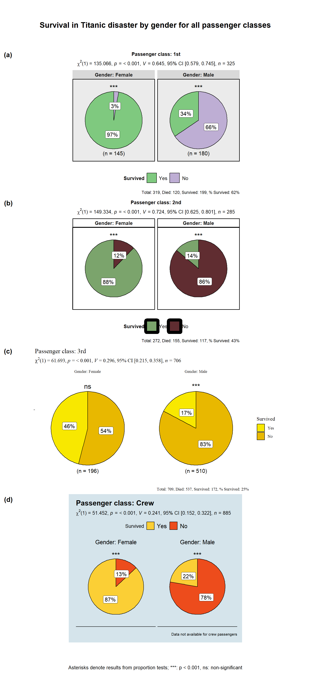

ggstatsplot with purrr packagevignettes/purrr_examples.Rmd
purrr_examples.Rmdpurrr?Most of ggstatsplot functions have grouped_ variants, which are designed to quickly run the same ggstatsplot function across multiple levels of a single grouping variable. Although this function has its utility for quick data exploration, it has two strong weaknesses-
The arguments applied to grouped_ function call are applied uniformly to all levels of the grouping variable when we might want to customize them for different levels of the grouping variable.
Only one grouping variable can be used to repeat the analysis when in reality there can be a combination of grouping variables and the operation needs to be repeated for all resulting combinations.
We will see how to overcome this limitation by combining ggstatsplot with the purrr package. Although output from only one example is shown here, the users are encouraged to execute the other examples.
Note before:
ggstatsplot functions where arguments can be quoted ("x") or unquoted (x), while using purrr::pmap, we must quote the arguments.ggplot2 themes from extension packages (like ggthemes).ggbetweenstats
library(ggstatsplot)
# for reproducibility
set.seed(123)
# let's split the dataframe and create a list by years of interest
year_list <- gapminder::gapminder %>%
dplyr::filter(
.data = .,
year == 1967 |
year == 1987 |
year == 2007,
continent != "Oceania"
) %>%
base::split(x = ., f = .$year, drop = TRUE)
# this created a list with 3 elements, one for each mpaa rating
# you can check the structure of the file for yourself
# str(year_list)
# checking the length and names of each element
length(year_list)
#> [1] 3
names(year_list)
#> [1] "1967" "1987" "2007"
# running function on every element of this list; note that if you want the same
# value for a given argument across all elements of the list, you need to
# specify it just once
plot_list <- purrr::pmap(
.l = list(
data = year_list,
x = "continent",
y = "lifeExp",
outlier.label = "country",
outlier.label.color = list(
"#56B4E9",
"#009E73",
"#F0E442"
),
xlab = "Continent",
ylab = "Life expectancy",
title = list(
"Year: 1967",
"Year: 1987",
"Year: 2007"
),
type = list("r", "p", "np"),
nboot = 25,
k = list(1, 2, 3),
effsize.type = list(
NULL,
"partial_omega",
"partial_eta"
),
plot.type = list("box", "boxviolin", "violin"),
mean.ci = list(TRUE, FALSE, FALSE),
package = list("nord", "ochRe", "awtools"),
palette = list("aurora", "parliament", "ppalette"),
ggtheme = list(
ggthemes::theme_stata(),
ggplot2::theme_classic(),
ggthemes::theme_fivethirtyeight()
),
ggstatsplot.layer = list(FALSE, FALSE, FALSE),
sample.size.label = list(TRUE, FALSE, TRUE),
messages = FALSE
),
.f = ggstatsplot::ggbetweenstats
)
# combining all individual plots from the list into a single plot using combine_plots function
ggstatsplot::combine_plots(
plotlist = plot_list,
title.text = "Changes in life expectancy across continents (1967-2007)",
title.color = "red",
nrow = 3,
ncol = 1
)
ggscatterstats
# for reproducibility
set.seed(123)
# let's split the dataframe and create a list by mpaa rating
# let's use only 25% of the data
# also let's leave out movies with NC-17 rating because there are so few of them
mpaa_list <- ggstatsplot::movies_wide %>%
dplyr::filter(.data = ., mpaa != "NC-17") %>%
dplyr::sample_frac(tbl = ., size = 0.25) %>%
base::split(x = ., f = .$mpaa, drop = TRUE)
# this created a list with 3 elements, one for each mpaa rating
# you can check the structure of the file for yourself
# str(mpaa_list)
# checking the length and names of each element
length(mpaa_list)
#> [1] 3
names(mpaa_list)
#> [1] "PG" "PG-13" "R"
# running function on every element of this list note that if you want the same
# value for a given argument across all elements of the list, you need to
# specify it just once
plot_list <- purrr::pmap(
.l = list(
data = mpaa_list,
x = "budget",
y = "rating",
xlab = "Budget (in millions of US dollars)",
ylab = "Rating on IMDB",
title = list(
"MPAA Rating: PG",
"MPAA Rating: PG-13",
"MPAA Rating: R"
),
label.var = list("title", "year", "length"),
label.expression = list(
"rating > 8.5 &
budget < 100",
"rating > 8 & budget < 50",
"rating > 9 & budget < 10"
),
type = list("r", "np", "p"),
method = list(MASS::rlm, "lm", "lm"),
nboot = 25,
marginal.type = list("boxplot", "density", "violin"),
centrality.para = list("mean", "median", "mean"),
xfill = list("#009E73", "#999999", "#0072B2"),
yfill = list("#CC79A7", "#F0E442", "#D55E00"),
ggtheme = list(
ggthemes::theme_tufte(),
ggplot2::theme_classic(),
ggplot2::theme_light()
),
ggstatsplot.layer = list(FALSE, TRUE, TRUE),
messages = FALSE
),
.f = ggstatsplot::ggscatterstats
)
# combining all individual plots from the list into a single plot using combine_plots function
ggstatsplot::combine_plots(
plotlist = plot_list,
title.text = "Relationship between movie budget and IMDB rating",
caption.text = "Source: www.imdb.com",
caption.size = 16,
title.color = "red",
caption.color = "blue",
nrow = 3,
ncol = 1,
labels = c("(a)","(b)","(c)","(d)")
)
ggcorrmat
# splitting the dataframe by cut and creting a list
# also, to make this fast, let's only use 5% of the sample
cut_list <- ggplot2::diamonds %>%
dplyr::sample_frac(tbl = ., size = 0.05) %>%
base::split(x = ., f = .$cut, drop = TRUE)
# this created a list with 5 elements, one for each quality of cut
# you can check the structure of the file for yourself
# str(cut_list)
# checking the length and names of each element
length(cut_list)
#> [1] 5
names(cut_list)
#> [1] "Fair" "Good" "Very Good" "Premium" "Ideal"
# running function on every element of this list note that if you want the same
# value for a given argument across all elements of the list, you need to
# specify it just once
plot_list <- purrr::pmap(
.l = list(
data = cut_list,
cor.vars = list(c("carat", "depth", "table", "price")),
cor.vars.names = list(c(
"carat",
"total depth",
"table",
"price"
)),
corr.method = list("pearson", "np", "robust", "p", "kendall"),
# note that we are changing both p-value adjustment method *and*
# significance level to display the significant correlations in the
# visualization matrix
p.adjust.method = list("none", "hommel", "fdr", "BY", "hochberg"),
sig.level = list(0.05, 0.001, 0.01, 0.05, 0.003),
lab.size = 3.5,
colors = list(
c("#56B4E9", "white", "#999999"),
c("#0072B2", "white", "#D55E00"),
c("#CC79A7", "white", "#F0E442"),
c("#56B4E9", "white", "#D55E00"),
c("#999999", "white", "#0072B2")
),
ggstatsplot.layer = list(FALSE),
ggtheme = list(
ggplot2::theme_grey(),
ggplot2::theme_classic(),
ggthemes::theme_fivethirtyeight(),
ggplot2::theme_bw(),
ggthemes::theme_tufte()
)
),
.f = ggstatsplot::ggcorrmat
)
#> Note: In the correlation matrix, the upper triangle is based on p-values adjusted for multiple comparisons, while the lower triangle is based on unadjusted p-values.
#> Note: In the correlation matrix, the upper triangle is based on p-values adjusted for multiple comparisons, while the lower triangle is based on unadjusted p-values.
#> Note: In the correlation matrix, the upper triangle is based on p-values adjusted for multiple comparisons, while the lower triangle is based on unadjusted p-values.
#> Note: In the correlation matrix, the upper triangle is based on p-values adjusted for multiple comparisons, while the lower triangle is based on unadjusted p-values.
# combining all individual plots from the list into a single plot using combine_plots function
ggstatsplot::combine_plots(
plotlist = plot_list,
title.text = "Relationship between diamond attributes and price across cut",
title.size = 16,
title.color = "red",
caption.text = "Dataset: Diamonds from ggplot2 package",
caption.size = 14,
caption.color = "blue",
labels = c("(a)", "(b)", "(c)", "(d)", "(e)"),
nrow = 3,
ncol = 2
)
gghistostats
# for reproducibility
set.seed(123)
# libraries needed
library(ggthemes)
# let's split the dataframe and create a list by continent
# let's leave out Oceania because it has just two data points
continent_list <- gapminder::gapminder %>%
dplyr::filter(.data = ., year == 2007, continent != "Oceania") %>%
base::split(x = ., f = .$continent, drop = TRUE)
# this created a list with 4 elements, one for each continent
# you can check the structure of the file for yourself
# str(continent_list)
# checking the length and names of each element
length(continent_list)
#> [1] 4
names(continent_list)
#> [1] "Africa" "Americas" "Asia" "Europe"
# running function on every element of this list note that if you want the same
# value for a given argument across all elements of the list, you need to
# specify it just once
plot_list <- purrr::pmap(
.l = list(
data = continent_list,
x = "lifeExp",
xlab = "Life expectancy",
test.value = list(35.6, 58.4, 41.6, 64.7),
type = list("p", "np", "r", "bf"),
bf.message = list(TRUE, FALSE, FALSE, FALSE),
title = list(
"Continent: Africa",
"Continent: Americas",
"Continent: Asia",
"Continent: Europe"
),
bar.measure = list("proportion", "count", "proportion", "density"),
fill.gradient = list(TRUE, FALSE, FALSE, TRUE),
low.color = list("#56B4E9", "white", "#999999", "#009E73"),
high.color = list("#D55E00", "white", "#F0E442", "#F0E442"),
bar.fill = list("white", "red", "orange", "blue"),
centrality.color = "black",
test.value.line = TRUE,
test.value.color = "black",
centrality.para = "mean",
ggtheme = list(
ggplot2::theme_classic(),
ggthemes::theme_fivethirtyeight(),
ggplot2::theme_minimal(),
ggthemes::theme_few()
),
messages = FALSE
),
.f = ggstatsplot::gghistostats
)
#> Note: 95% CI for robsut location measure median, Huber Psi computed with 100 bootstrap samples.
# combining all individual plots from the list into a single plot using combine_plots function
ggstatsplot::combine_plots(
plotlist = plot_list,
title.text = "Improvement in life expectancy worldwide since 1950",
caption.text = "Note: black line - 1950; blue line - 2007",
nrow = 4,
ncol = 1,
labels = c("(a)", "(b)", "(c)", "(d)")
)
ggpiestats
# let's split the dataframe and create a list by passenger class
class_list <- ggstatsplot::Titanic_full %>%
base::split(x = ., f = .$Class, drop = TRUE)
# this created a list with 4 elements, one for each class
# you can check the structure of the file for yourself
# str(class_list)
# checking the length and names of each element
length(class_list)
#> [1] 4
names(class_list)
#> [1] "1st" "2nd" "3rd" "Crew"
# running function on every element of this list note that if you want the same
# value for a given argument across all elements of the list, you need to
# specify it just once
plot_list <- purrr::pmap(
.l = list(
data = class_list,
main = "Survived",
condition = "Sex",
nboot = 10,
facet.wrap.name = "Gender",
title = list(
"Passenger class: 1st",
"Passenger class: 2nd",
"Passenger class: 3rd",
"Passenger class: Crew"
),
caption = list(
"Total: 319, Died: 120, Survived: 199, % Survived: 62%",
"Total: 272, Died: 155, Survived: 117, % Survived: 43%",
"Total: 709, Died: 537, Survived: 172, % Survived: 25%",
"Data not available for crew passengers"
),
package = list("RColorBrewer", "ghibli", "palettetown", "yarrr"),
palette = list("Accent", "MarnieMedium1", "pikachu", "nemo"),
ggtheme = list(
ggplot2::theme_grey(),
ggplot2::theme_bw(),
ggthemes::theme_tufte(),
ggthemes::theme_economist()
),
ggstatsplot.layer = list(TRUE, TRUE, FALSE, FALSE),
sample.size.label = list(TRUE, FALSE, TRUE, FALSE),
messages = FALSE
),
.f = ggstatsplot::ggpiestats
)
# combining all individual plots from the list into a single plot using combine_plots function
ggstatsplot::combine_plots(
plotlist = plot_list,
title.text = "Survival in Titanic disaster by gender for all passenger classes",
caption.text = "Asterisks denote results from proportion tests: \n***: p < 0.001, ns: non-significant",
nrow = 4,
ncol = 1,
labels = c("(a)","(b)","(c)", "(d)")
)
If you find any bugs or have any suggestions/remarks, please file an issue on GitHub: https://github.com/IndrajeetPatil/ggstatsplot/issues
Summarizing session information for reproducibility.
options(width = 200)
devtools::session_info()
#> - Session info ---------------------------------------------------------------------------------------------------------------------------------------------------------------------------------------
#> setting value
#> version R version 3.5.1 (2018-07-02)
#> os Windows 10 x64
#> system x86_64, mingw32
#> ui RTerm
#> language (EN)
#> collate English_United States.1252
#> ctype English_United States.1252
#> tz America/New_York
#> date 2018-09-29
#>
#> - Packages -------------------------------------------------------------------------------------------------------------------------------------------------------------------------------------------
#> package * version date lib source
#> assertthat 0.2.0 2017-04-11 [1] CRAN (R 3.5.0)
#> backports 1.1.2 2017-12-13 [1] CRAN (R 3.5.0)
#> base64enc 0.1-3 2015-07-28 [1] CRAN (R 3.5.0)
#> BayesFactor 0.9.12-4.2 2018-05-19 [1] CRAN (R 3.5.0)
#> bayesplot 1.6.0 2018-08-02 [1] CRAN (R 3.5.1)
#> bindr 0.1.1 2018-03-13 [1] CRAN (R 3.5.0)
#> bindrcpp * 0.2.2 2018-03-29 [1] CRAN (R 3.5.0)
#> boot 1.3-20 2017-08-06 [2] CRAN (R 3.5.1)
#> broom 0.5.0.9001 2018-09-16 [1] Github (tidyverse/broom@1e65668)
#> broom.mixed 0.2.2 2018-09-26 [1] Github (bbolker/broom.mixed@9feb131)
#> ca 0.70 2016-12-14 [1] CRAN (R 3.5.0)
#> callr 3.0.0 2018-08-24 [1] CRAN (R 3.5.1)
#> cli 1.0.1 2018-09-25 [1] CRAN (R 3.5.1)
#> coda 0.19-1 2016-12-08 [1] CRAN (R 3.5.0)
#> codetools 0.2-15 2016-10-05 [2] CRAN (R 3.5.1)
#> coin 1.2-2 2017-11-28 [1] CRAN (R 3.5.0)
#> colorspace 1.3-2 2016-12-14 [1] CRAN (R 3.5.0)
#> commonmark 1.5 2018-04-28 [1] CRAN (R 3.5.0)
#> cowplot 0.9.99 2018-08-23 [1] Github (wilkelab/cowplot@374c3e9)
#> crayon 1.3.4 2018-09-26 [1] Github (r-lib/crayon@3e751fb)
#> data.table 1.11.6 2018-09-19 [1] CRAN (R 3.5.1)
#> debugme 1.1.0 2017-10-22 [1] CRAN (R 3.5.0)
#> desc 1.2.0 2018-05-01 [1] CRAN (R 3.5.0)
#> devtools 1.13.6.9000 2018-09-23 [1] Github (r-lib/devtools@74df201)
#> digest 0.6.17 2018-09-12 [1] CRAN (R 3.5.1)
#> dplyr 0.7.6 2018-06-29 [1] CRAN (R 3.5.0)
#> effsize 0.7.1 2017-03-21 [1] CRAN (R 3.5.0)
#> emmeans 1.2.4 2018-09-22 [1] CRAN (R 3.5.1)
#> estimability 1.3 2018-02-11 [1] CRAN (R 3.5.0)
#> evaluate 0.11 2018-07-17 [1] CRAN (R 3.5.1)
#> exact2x2 1.6.3 2018-07-27 [1] CRAN (R 3.5.1)
#> exactci 1.3-3 2017-10-02 [1] CRAN (R 3.5.0)
#> forcats 0.3.0 2018-02-19 [1] CRAN (R 3.5.0)
#> foreign 0.8-70 2017-11-28 [2] CRAN (R 3.5.1)
#> fs 1.2.6 2018-08-23 [1] CRAN (R 3.5.1)
#> gapminder 0.3.0 2017-10-31 [1] CRAN (R 3.5.0)
#> generics 0.0.1.9000 2018-09-16 [1] Github (r-lib/generics@aaa6122)
#> ggcorrplot 0.1.2 2018-09-11 [1] CRAN (R 3.5.1)
#> ggExtra 0.8 2018-08-14 [1] Github (daattali/ggExtra@76d1618)
#> ggplot2 3.0.0.9000 2018-09-26 [1] Github (tidyverse/ggplot2@e9f7ded)
#> ggrepel 0.8.0.9000 2018-09-09 [1] Github (slowkow/ggrepel@91877ca)
#> ggridges 0.5.1 2018-09-27 [1] CRAN (R 3.5.1)
#> ggstatsplot * 0.0.5.9000 2018-09-29 [1] local
#> ggthemes * 4.0.1 2018-08-24 [1] CRAN (R 3.5.1)
#> glmmTMB 0.2.2.0 2018-07-03 [1] CRAN (R 3.5.1)
#> glue 1.3.0 2018-09-17 [1] Github (tidyverse/glue@4e74901)
#> gnm 1.1-0 2018-06-21 [1] CRAN (R 3.5.0)
#> gtable 0.2.0 2016-02-26 [1] CRAN (R 3.5.0)
#> gtools 3.8.1 2018-06-26 [1] CRAN (R 3.5.0)
#> haven 1.1.2 2018-06-27 [1] CRAN (R 3.5.0)
#> hms 0.4.2 2018-03-10 [1] CRAN (R 3.5.0)
#> htmldeps 0.1.1 2018-09-17 [1] Github (rstudio/htmldeps@c1023e0)
#> htmltools 0.3.6 2017-04-28 [1] CRAN (R 3.5.0)
#> httpuv 1.4.5 2018-07-19 [1] CRAN (R 3.5.1)
#> jmv 0.9.4 2018-09-29 [1] Github (jamovi/jmv@7dac133)
#> jmvcore 0.9.4 2018-09-17 [1] CRAN (R 3.5.1)
#> knitr 1.20.12 2018-08-13 [1] local
#> labeling 0.3 2014-08-23 [1] CRAN (R 3.5.0)
#> later 0.7.5 2018-09-18 [1] CRAN (R 3.5.1)
#> lattice 0.20-35 2017-03-25 [2] CRAN (R 3.5.1)
#> lazyeval 0.2.1 2017-10-29 [1] CRAN (R 3.5.0)
#> lme4 1.1-18-1 2018-08-17 [1] CRAN (R 3.5.1)
#> lmtest 0.9-36 2018-04-04 [1] CRAN (R 3.5.0)
#> magrittr 1.5 2014-11-22 [1] CRAN (R 3.5.0)
#> MASS 7.3-50 2018-04-30 [2] CRAN (R 3.5.1)
#> Matrix 1.2-14 2018-04-13 [2] CRAN (R 3.5.1)
#> MatrixModels 0.4-1 2015-08-22 [1] CRAN (R 3.5.0)
#> mc2d 0.1-18 2017-03-06 [1] CRAN (R 3.5.0)
#> memoise 1.1.0 2017-04-21 [1] CRAN (R 3.5.0)
#> mime 0.5 2016-07-07 [1] CRAN (R 3.5.0)
#> miniUI 0.1.1.1 2018-05-18 [1] CRAN (R 3.5.0)
#> minqa 1.2.4 2014-10-09 [1] CRAN (R 3.5.0)
#> mnormt 1.5-5 2016-10-15 [1] CRAN (R 3.5.0)
#> modelr 0.1.2 2018-05-11 [1] CRAN (R 3.5.0)
#> modeltools 0.2-22 2018-07-16 [1] CRAN (R 3.5.1)
#> multcomp 1.4-8 2017-11-08 [1] CRAN (R 3.5.0)
#> munsell 0.5.0 2018-06-12 [1] CRAN (R 3.5.0)
#> mvtnorm 1.0-8 2018-05-31 [1] CRAN (R 3.5.0)
#> nlme 3.1-137 2018-04-07 [2] CRAN (R 3.5.1)
#> nloptr 1.0.4 2017-08-22 [1] CRAN (R 3.5.0)
#> nnet 7.3-12 2016-02-02 [1] CRAN (R 3.5.0)
#> paletteer 0.1.0 2018-07-10 [1] CRAN (R 3.5.1)
#> pbapply 1.3-4 2018-01-10 [1] CRAN (R 3.5.0)
#> pillar 1.3.0.9000 2018-09-21 [1] Github (r-lib/pillar@ccbdef4)
#> pkgbuild 1.0.1.9000 2018-09-23 [1] Github (r-lib/pkgbuild@3919d9c)
#> pkgconfig 2.0.2 2018-08-16 [1] CRAN (R 3.5.1)
#> pkgdown 1.1.0.9000 2018-09-27 [1] Github (r-lib/pkgdown@c3aafc1)
#> pkgload 1.0.0 2018-09-17 [1] Github (r-lib/pkgload@7771d78)
#> plyr 1.8.4 2016-06-08 [1] CRAN (R 3.5.0)
#> prediction 0.3.6 2018-05-22 [1] CRAN (R 3.5.0)
#> prettyunits 1.0.2 2015-07-13 [1] CRAN (R 3.5.0)
#> processx 3.2.0 2018-08-16 [1] CRAN (R 3.5.1)
#> promises 1.0.1 2018-04-13 [1] CRAN (R 3.5.0)
#> ps 1.1.0 2018-08-10 [1] CRAN (R 3.5.1)
#> psych 1.8.4 2018-05-06 [1] CRAN (R 3.5.0)
#> purrr 0.2.5 2018-05-29 [1] CRAN (R 3.5.0)
#> purrrlyr 0.0.3 2018-05-29 [1] CRAN (R 3.5.0)
#> pwr 1.2-2 2018-03-03 [1] CRAN (R 3.5.0)
#> qvcalc 0.9-1 2017-09-19 [1] CRAN (R 3.5.0)
#> R6 2.2.2 2017-06-17 [1] CRAN (R 3.5.0)
#> Rcpp 0.12.18 2018-07-23 [1] CRAN (R 3.5.1)
#> relimp 1.0-5 2016-03-30 [1] CRAN (R 3.5.0)
#> remotes 1.1.1.9000 2018-09-23 [1] Github (r-lib/remotes@5a07ad2)
#> reshape 0.8.7 2017-08-06 [1] CRAN (R 3.5.0)
#> reshape2 1.4.3 2017-12-11 [1] CRAN (R 3.5.0)
#> rjson 0.2.20 2018-06-08 [1] CRAN (R 3.5.0)
#> rlang 0.2.2 2018-08-16 [1] CRAN (R 3.5.1)
#> rmarkdown 1.10.13 2018-09-17 [1] Github (rstudio/rmarkdown@df4ec91)
#> roxygen2 6.1.0.9000 2018-09-13 [1] Github (klutometis/roxygen@cc34200)
#> rprojroot 1.3-2 2018-01-03 [1] CRAN (R 3.5.0)
#> rstudioapi 0.7 2017-09-07 [1] CRAN (R 3.5.0)
#> sandwich 2.5-0 2018-08-17 [1] CRAN (R 3.5.1)
#> scales 1.0.0 2018-08-09 [1] CRAN (R 3.5.1)
#> sessioninfo 1.1.0 2018-09-25 [1] CRAN (R 3.5.1)
#> shiny 1.1.0 2018-05-17 [1] CRAN (R 3.5.0)
#> sjlabelled 1.0.14 2018-09-12 [1] CRAN (R 3.5.1)
#> sjmisc 2.7.5 2018-09-13 [1] CRAN (R 3.5.1)
#> sjstats 0.17.0 2018-08-20 [1] CRAN (R 3.5.1)
#> snakecase 0.9.2 2018-08-14 [1] CRAN (R 3.5.1)
#> ssanv 1.1 2015-06-23 [1] CRAN (R 3.5.0)
#> stringdist 0.9.5.1 2018-06-08 [1] CRAN (R 3.5.0)
#> stringi 1.2.4 2018-07-20 [1] CRAN (R 3.5.1)
#> stringr 1.3.1 2018-05-10 [1] CRAN (R 3.5.0)
#> survival 2.42-3 2018-04-16 [2] CRAN (R 3.5.1)
#> testthat 2.0.0 2017-12-13 [1] CRAN (R 3.5.0)
#> TH.data 1.0-9 2018-07-10 [1] CRAN (R 3.5.1)
#> tibble 1.4.2 2018-01-22 [1] CRAN (R 3.5.1)
#> tidyr 0.8.1 2018-05-18 [1] CRAN (R 3.5.0)
#> tidyselect 0.2.4 2018-02-26 [1] CRAN (R 3.5.0)
#> TMB 1.7.14 2018-06-23 [1] CRAN (R 3.5.0)
#> usethis 1.4.0.9000 2018-09-23 [1] Github (r-lib/usethis@1e3c6a6)
#> vcd 1.4-4 2017-12-06 [1] CRAN (R 3.5.0)
#> vcdExtra 0.7-1 2017-09-29 [1] CRAN (R 3.5.0)
#> withr 2.1.2 2018-03-15 [1] CRAN (R 3.5.0)
#> WRS2 0.10-0 2018-06-15 [1] CRAN (R 3.5.0)
#> xfun 0.3 2018-07-06 [1] CRAN (R 3.5.1)
#> xml2 1.2.0 2018-01-24 [1] CRAN (R 3.5.0)
#> xtable 1.8-3 2018-08-29 [1] CRAN (R 3.5.1)
#> yaml 2.2.0 2018-07-25 [1] CRAN (R 3.5.1)
#> zoo 1.8-4 2018-09-19 [1] CRAN (R 3.5.1)
#>
#> [1] C:/Users/inp099/Documents/R/win-library/3.5
#> [2] C:/Program Files/R/R-3.5.1/library